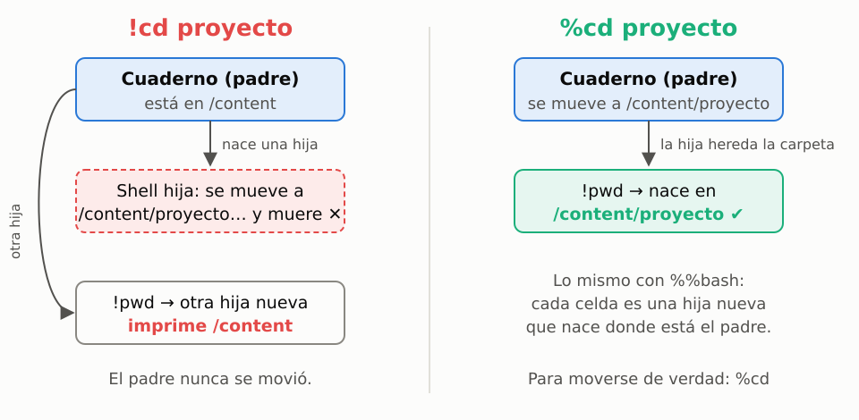
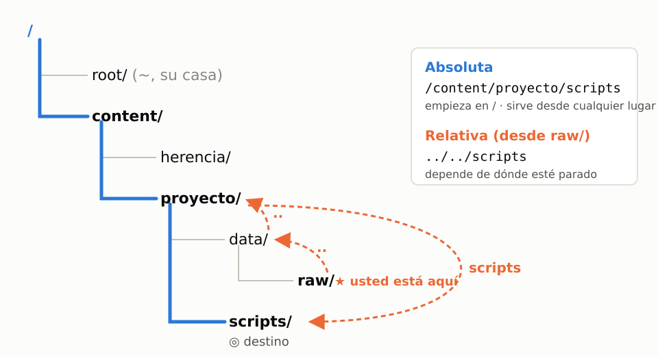

## Semana 1 · Orientarse en la shell <p class="sub">U0 · Bootcamp UNIX · Genómica y Filogenética</p>  Note: Primera clase. Presentar el curso en un minuto: 16 semanas, un problema real con datos reales (el LTEE se cuenta completo en la semana 4). Semanas 1–3: bootcamp de la shell. Hoy no hay quiz: empieza la próxima semana, sobre lo de hoy.
## El reto de hoy <div class="reto">Un genoma de 4,6 millones de letras y millones de lecturas por clon: ¿cómo se organiza, se encuentra y se maneja todo eso <strong>sin abrir los archivos</strong>?</div> - Hoy: **dónde** estamos (rutas) y **dónde** guardar cada cosa (el proyecto) - La próxima semana: **qué** hay dentro de los archivos Note: Es la pregunta biológica del cuaderno. REL606 tiene 4 629 812 pb (Jeong et al., 2009). Antes de abrir Colab, pedir que apaguen el autocompletado y la IA (celda «Antes de empezar»).
## El cuaderno y sus shells hijas <p></p> <p class="pie">Bloque 1 del cuaderno</p> Note: Usarla DESPUÉS de que vean el !cd que no se queda (predicción → sorpresa → explicación). Cada ! y cada %%bash es una hija que nace donde está el padre y muere al terminar.
## Dos formas de llegar al mismo lugar <p></p> <p class="pie">Bloque 2 del cuaderno</p> Note: Absoluta = dirección completa («Calle 10 # 5-20, Medellín»); relativa = «dos cuadras a la izquierda». Preguntar: ¿qué ruta sigue funcionando si me muevo a otra carpeta?
## Sesión 2 · Retos: el congelador del LTEE - **En parejas.** Quien **conduce** escribe; quien **navega** lee el reto y revisa los errores. Cambian en cada reto. - **6 retos, ~70 min.** Solo comandos de la sesión 1 y lo que encuentren en `--help`. - **Si se atascan:** 1) lean el error · 2) `--help` · 3) otra pareja · 4) el profesor - **Entrega:** el cuaderno con sus comandos, respuestas y bitácora, en la carpeta de la pareja Note: Cierre (10 min): puesta en común. Preguntas que salen solas: ¿por qué unos vieron 12 K y otros 16 K (ls -l frente a ls -s)? ¿Por qué a algunos les quedó una sola muestra en data/raw (cp sobrescribe sin avisar)?